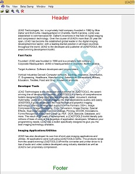

Annotations Bates Stamp Composer DemoDemonstrates how to create a LEADTOOLS Bates Stamp object, burn it to image, or save it to an XML file. You can load the saved file using the Annotations demo to apply the stamp object onto the container. |
 |